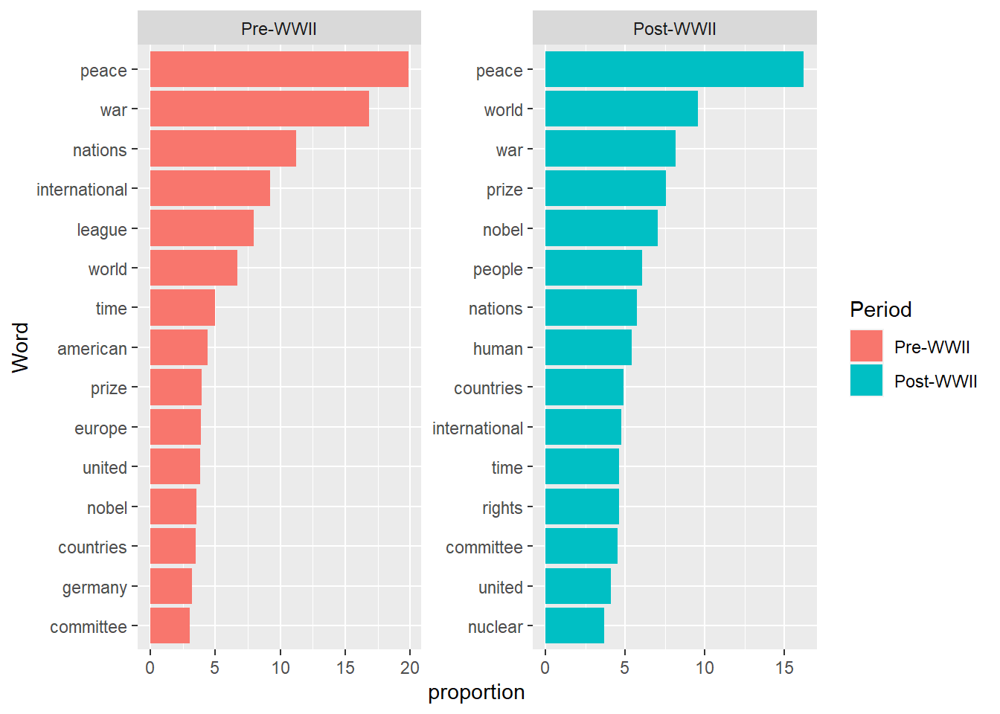

We’ve talked about tidy format – each variable a column, each observation a row, each type of observational unit a table. We’ve taken speeches at the Nobel prize and pages of oil company Sustainability Reports as our observations and can use this to do some transformations – do total word counts or specific word frequencies. But once we start really doing analysis at the level of the word, tidy rules would seem to dictate that we treat not individual texts but individual words as observations. Thus tidytext format is a table with one word per row.
It might help if we are more specific: we can use two signifiers for words - words and tokens. Words are unique, well, words as we conceive of them. Tokens are each individual instances of a word. So a sentence: “the brown fox jumped over the brown log” we will say has 8 tokens (number of total words) but 6 words (number of unique words, as “the” and “brown” appear twice).1 So tidy data format is one token per row.2
We convert character strings that we have been working with into tidy text with the unnest_rows() function in the tidytext package, which splits texts up by tokens (a process appropriately called “tokenization”).
# Lets use the first speach in our Nobel corpus as an example
library(tidytext)
library(tidyverse)
nobel <- read_rds("data/nobel_cleaned.Rds")
ex <- nobel[1,]
ex %>%
unnest_tokens(output = words, input = AwardSpeech)## # A tibble: 598 x 3
## Year Laureate words
## <dbl> <chr> <chr>
## 1 1905 Bertha von Suttner on
## 2 1905 Bertha von Suttner behalf
## 3 1905 Bertha von Suttner of
## 4 1905 Bertha von Suttner the
## 5 1905 Bertha von Suttner nobel
## 6 1905 Bertha von Suttner committee
## 7 1905 Bertha von Suttner bjørnstjerne
## 8 1905 Bertha von Suttner bjørnson
## 9 1905 Bertha von Suttner introduced
## 10 1905 Bertha von Suttner the
## # ... with 588 more rowsWe now end up with a dataframe where each row is an observation with words, year, and Nobel laureate as variables. Note also that tidytext does cleaning - whitespace stripping, to_lower and so on. We didn’t notice here as we’re using our dataframe that we have already cleaned. The first thing we might notice is the number of rows is the total word count.
Another way in which texts are frequently pre-processed for analysis and we can now look at is to remove so-called stop words. Stop words are words with grammatical rather than syntactic function - they make things we say grammatical but don’t add (much) meaning. Examples include “a,” “the,” “of” and so on. What counts as a stopword might vary on our corpus! And what sort of analysis we’re trying to do.3 All major text analysis packages have means for removing stop words. In ‘’tidytext’’ we have a list of stopwords called stop_words from a couple of different corpora (?stop_words for more info and links).
stop_words## # A tibble: 1,149 x 2
## word lexicon
## <chr> <chr>
## 1 a SMART
## 2 a's SMART
## 3 able SMART
## 4 about SMART
## 5 above SMART
## 6 according SMART
## 7 accordingly SMART
## 8 across SMART
## 9 actually SMART
## 10 after SMART
## # ... with 1,139 more rowsnobel_tidy <- nobel %>%
unnest_tokens(output = words, input = AwardSpeech) %>%
anti_join(stop_words, by = c("words" = "word")) # by= specifies which columns to use, had they been named the same thing we could have omitted itstop_words, we’ll recall, is a tibble, so we can easily make our own tibble of stopwords and add it. Say (for purposes of demonstration) I think that the Peace Prize award ceremony is, of course, going to talk about peace and war so we want to weed these words out of our frequency counts.
my_words <- c("peace", "war")
custom_stop_words <- tibble(word = my_words, lexicon = "my_customization")
stop_words_custom <- rbind(stop_words, custom_stop_words)
tail(stop_words_custom) # view the end of the tibble, look like our words were added correctly## # A tibble: 6 x 2
## word lexicon
## <chr> <chr>
## 1 younger onix
## 2 youngest onix
## 3 your onix
## 4 yours onix
## 5 peace my_customization
## 6 war my_customizationNow we can apply the stop_words_custom just like we did stop_words. We won’t actually do this because we probably want these words in the corpus!
If we are looking at word frequencies, will we want to count “represent” and “represented” as the same word? Or “war” and “wars?” Very likely. If so we can transform our text via a process called stemming, cutting down words to their stems so that different forms of these word are recognized as being the same thing. Something like this matters in English but might really matter in an more highly inflected language like Russian.
We have a couple stemmers to choose from in R, one and the best known is the Porter Stemming algorithm. Another is hunspell, based on the popular open source and multilingual spell checker. We’ll use Porter here.
To see it in action we’ll first test it against a short test set of words and then apply to our whole corpus.
library(SnowballC)
words_to_stem <- c("going", "represented", "wars", "similarity", "books")
SnowballC::wordStem(words_to_stem)## [1] "go" "repres" "war" "similar" "book"Stemming in action. So now applied to the entire document:
(nobel_tidy_stemmed <- nobel_tidy %>%
mutate(word_stem = wordStem(words)))## # A tibble: 94,107 x 4
## Year Laureate words word_stem
## <dbl> <chr> <chr> <chr>
## 1 1905 Bertha von Suttner behalf behalf
## 2 1905 Bertha von Suttner nobel nobel
## 3 1905 Bertha von Suttner committee committe
## 4 1905 Bertha von Suttner bjørnstjerne bjørnstjern
## 5 1905 Bertha von Suttner bjørnson bjørnson
## 6 1905 Bertha von Suttner introduced introduc
## 7 1905 Bertha von Suttner speaker speaker
## 8 1905 Bertha von Suttner baroness baro
## 9 1905 Bertha von Suttner bertha bertha
## 10 1905 Bertha von Suttner von von
## # ... with 94,097 more rowswrite_rds(nobel_tidy_stemmed, "data/nobel_stemmed.Rds")Now we can find the most frequently appearing words in the corpus.
nobel_tidy %>%
count(words, sort=TRUE)## # A tibble: 12,329 x 2
## words n
## <chr> <int>
## 1 peace 1595
## 2 war 927
## 3 world 847
## 4 prize 646
## 5 nations 642
## 6 nobel 597
## 7 international 530
## 8 people 513
## 9 time 441
## 10 human 440
## # ... with 12,319 more rowsRemember we got this nice and informative result only because we already removed the stopwords. OTherwise we would have been swamped with “the,” “and,” and so on.
Our knowledge of how to subset tibbles will now come in pretty handy. If we want to get the most frequent words, say, before 1945 we easily do this.
nobel_tidy %>%
filter(Year < 1945) %>%
count(words, sort=TRUE)## # A tibble: 4,801 x 2
## words n
## <chr> <int>
## 1 peace 346
## 2 war 301
## 3 nations 193
## 4 international 157
## 5 league 145
## 6 world 110
## 7 time 81
## 8 american 72
## 9 prize 72
## 10 europe 69
## # ... with 4,791 more rowsAnd we could then compare it to post-1945 word frequency and we’d see pre-WWII prize speeches were more concentrated on Europe, the League, and nations while after that we get more talk of world, people, human, committee. That makes sense.
Let’s graph this.
nobel_tidy %>%
count(words, sort=TRUE) %>%
top_n(15) %>% # selecting to show only top 15 words
mutate(words = reorder(words,desc(n))) %>% # this will ensure that the highest frequency words appear to the left
ggplot(aes(words, n)) +
geom_col()## Selecting by nAnd with just a little bit more code we can view pre-1945 and post-1945 top frequency words at the same time.
nobel_tidy %>%
mutate(Period = ifelse(Year <= 1945, "Pre-WWII", "Post-WWII")) %>% # creating columns with label "Pre-WWII" and "Post-WWII"
mutate(Period = factor(Period, levels = c("Pre-WWII", "Post-WWII"))) %>%
group_by(Period) %>% # grouping by this column label so frequencies will be calculated within group
count(words, sort=TRUE) %>%
mutate(proportion = n / sum(n) * 1000) %>% # perhaps we'd like word frequency per 1000 words rather than raw counts?
slice_max(order_by=proportion, n = 15) %>% # selecting to show only top 15 words within each group
ggplot(aes(reorder_within(x = words, by = proportion, within = Period), proportion, fill = Period)) + # reordering is a bit tricky, see ?reorder_within()
geom_col() +
scale_x_reordered() +
coord_flip() +
facet_wrap(~Period, ncol = 2, scales = "free") +
xlab("Word")
One common visualization of word frequency is word clouds. To do this we use the package wordcloud which will work very nicely with our tidily organized data. Wordcloud2 gives color and more fancy options that you can also play with.
library(wordcloud)## Loading required package: RColorBrewerlibrary(wordcloud2)
nobel_tidy %>%
count(words, sort=TRUE) %>%
with(wordcloud(words, n, max.words = 100))dat <- nobel_tidy %>%
count(words, sort=TRUE) %>%
mutate(word = words) %>%
mutate(freq = n) %>%
select(word, freq) %>%
top_n(200)## Selecting by freqwordcloud2(dat, size = 2)It’s also possible to do word clouds that compare two documents. To do this we’ll need to step outside the tidyverse and organize our data in other formats so we save this for Session 5.
As we’ve seen, there are multiple ways to calculate frequency – we can take raw counts, or term frequency (\(tf\)). Proportions, term frequency divided by total token count in a given document, are another means. Certainly proportions make it easier to compare across corpora of different size. The problem with this is that they tend to get flooded with stopwords. One means of dealing with this is to remove the stopwords as we have done, but another is to attempt to downweigh words that appear often everywhere and upweigh those that are more unusual. Inverse document frequency (\(idf\)) is a weighting system to do this – it equals the total number of documents in the corpus divided by the number of documents in the corpus that contain the given word. The greater the number of documents in the corpus in which the word does not appear (suggesting words that are unique to certain documents rather than widespread across the corpus as a whole) the smaller the denominator and, thus, the greater the ratio.
TF-IDF is is term frequency times inverse document frequency. Both are often logged. In symbols,
\[\begin{equation} \text{TF}_{t,d} = \begin{cases} 1 + \text{log}_{10} \: \text{count(t,d)}, & \text{if count(t,d)} > 0 \\ 0,&\text{otherwise.}\\ \end{cases} \end{equation}\]
\[\begin{equation} \text{IDF}_{t} = \text{log}_{10} \: \bigg(\frac{N}{\text{df}_t}\bigg). \end{equation}\]
where t is the given term, d is a given document, df\(_t\) is the number of documents in the corpus containing term t, and N is the total number of documents in the corpus. Long story short, tf-idf attempts to weight words by both frequency in an individual document and their unusualness over a corpus of documents. Every word in every document will have its own tf-idf (term frequency will vary across documents while inverse document frequency is the same across the corpus).
Let’s see how we do this in R. First we’ll compute document frequency. In order to simplify results, lets use the same subsetting of our data into pre-1945 and post-1945 – this means we’re treating pre-WWII speeches as one single document and likewise post-1945 speeches. tidytext makes it pretty easy – simply unnest tokens and then count the tokens. Note that count enable counting within groups, which we passed to count telling it to do the counts within the groups denoted in column Period. This produces the same result as passing group_by(Period) in the previous line and eliminating Period from the count() call.
nobel <- read_rds("data/nobel_cleaned.Rds") %>%
mutate(Period = ifelse(Year <= 1945, "Pre-WWII", "Post-WWII"))
nobel_words <- nobel %>%
unnest_tokens(words, AwardSpeech) %>%
count(words, Period, sort = TRUE)We can then use bind_tf_idf() from tidytext. (Tidytext implements tf-idf using proportional, but not logged, tf – we’ll see some of these other versions in other packages). The function takes a first argument (other than the tidy dataframe) that is the word, a second that is the document, and third a column containing document-term counts).
tf_idf <- nobel_words %>%
bind_tf_idf(words, Period, n)
tf_idf## # A tibble: 17,036 x 6
## words Period n tf idf tf_idf
## <chr> <chr> <int> <dbl> <dbl> <dbl>
## 1 the Post-WWII 13947 0.0742 0 0
## 2 of Post-WWII 7281 0.0387 0 0
## 3 in Post-WWII 5614 0.0299 0 0
## 4 to Post-WWII 5591 0.0297 0 0
## 5 and Post-WWII 5417 0.0288 0 0
## 6 a Post-WWII 3712 0.0197 0 0
## 7 the Pre-WWII 3526 0.0761 0 0
## 8 that Post-WWII 2543 0.0135 0 0
## 9 is Post-WWII 2329 0.0124 0 0
## 10 of Pre-WWII 2191 0.0473 0 0
## # ... with 17,026 more rowsHere we see that tf-idf has zeroed out these extremely common and not very interesting terms, precisely what we’d hope an indicator like this would do. Lets see the highest tf-idf scores.
tf_idf %>% arrange(desc(tf_idf)) ## # A tibble: 17,036 x 6
## words Period n tf idf tf_idf
## <chr> <chr> <int> <dbl> <dbl> <dbl>
## 1 nuclear Post-WWII 278 0.00148 0.693 0.00102
## 2 saavedra Pre-WWII 22 0.000475 0.693 0.000329
## 3 locarno Pre-WWII 20 0.000432 0.693 0.000299
## 4 angell Pre-WWII 19 0.000410 0.693 0.000284
## 5 pan Pre-WWII 19 0.000410 0.693 0.000284
## 6 ladies Post-WWII 71 0.000378 0.693 0.000262
## 7 global Post-WWII 60 0.000319 0.693 0.000221
## 8 non Post-WWII 54 0.000287 0.693 0.000199
## 9 poverty Post-WWII 52 0.000277 0.693 0.000192
## 10 persons Post-WWII 51 0.000271 0.693 0.000188
## # ... with 17,026 more rowstf_idf %>%
mutate(Period = factor(Period, levels = c("Pre-WWII", "Post-WWII"))) %>%
group_by(Period) %>%
slice_max(tf_idf, n = 15) %>%
ungroup() %>%
ggplot(aes(tf_idf, fct_reorder(words, tf_idf), fill = Period)) +
geom_col(show.legend = FALSE) +
facet_wrap(~Period, ncol = 2, scales = "free") +
labs(x = "tf-idf", y = NULL)Many of these are names, logically enough as specific names of laureates appear mostly only when they are being awarded a prize thus increasing their idf and upweighing their tf-idf. To make this more useful we’d want to go through and week out (remove, just like stopwords) names. But still we see nuclear coming to the fore in the post-war era, reasonably enough! Things like “global,” “poverty” stand out post-war while pre-war we see “reparations,” “commercial,” more Europe specific vocabulary. A different conversation pre- and post-war.
We could also start talking about tokens and words being not just things we’d recognize as words but things like :) and so on.↩︎
We will also later talk about n-grams where we might take tokens to be 2-grams, sentences or even longer pieces of text.↩︎
Interestingly, one of the most famous cases of computational text analysis in the social science – Mosteller and Wallace’s attribution of anonymously published Federalist papers – analyzed stopwords and threw out everything else (Mosteller and Wallace (1963)).↩︎
This section and the next lean heavily on chapters 1 and 3 in Silge and Robinson (2017)↩︎